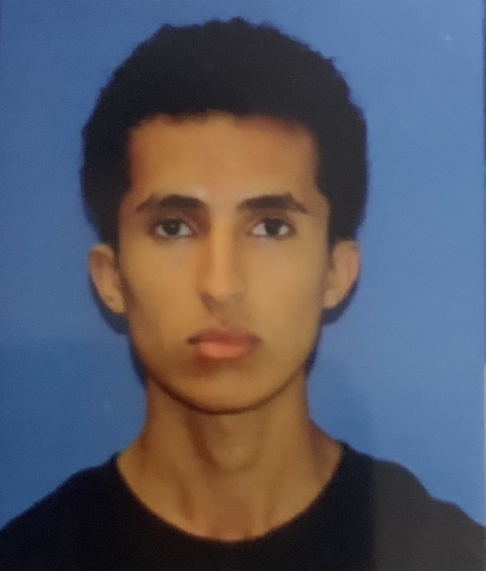

My Resume

Summary
- I am a hardworking, persistent, and determined to learn individual who has experience in customer service, leadership roles, and in retail.
Education
- Pembroke Pines Charter High School (Graduated 2022)
- Bachelor's of Science in Computer Science from Florida International University (Currently Enrolled)
Work Experience
- BurgerFi - General Team Member (January 2022 - August 2022)
- Student Government Association Senator of Broward College (July 2023 - January 2024)
- Starbucks Barista (October 2023 - Present)
Skills
- Great at working under pressure for extended periods of time.
- Great at being able to learn and hold myself accountable for my own mistakes.
- Great at working with others such as board members to solve campus problems.
- Great at working well with others with very time constraining requirements needing to be met.
Accomplishments and Specific Skills
- Shell Hacks Winner (For Microsoft Prompt)
- Harvard CS50 Certificate
- Web Development Bootcamp Certificate
- CompTIA Certificate
- Front-End Development
- Languages I'm familiar with: C, C#, C++, Java, HTML, CSS
Other